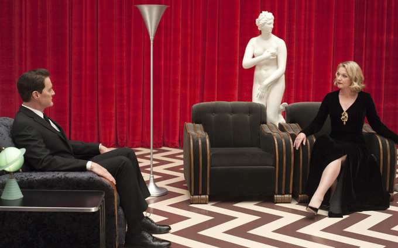

| Character | Actor |
|---|---|
| FBI Agent Dale Cooper | Kyle MacLachlan |
| Cooper's doppelgänger ("Mr. C") | Kyle MacLachlan |
| Douglas ("Dougie") Jones | Kyle MacLachlan |
| Character | Actor |
|---|---|
| Dr. Lawrence Jacoby | Russ Tamblyn |
| Shovel Delivery Driver | Joseph M. Auger |
| Benjamin Horne | Richard Beymer |
| Beverly Paige | Ashley Judd |
| Jerry Horne | David Patrick Kelly |
| Insurance Salesman | Allen Galli |
| Lucy Brennan | Kimmy Robertson |
| Margaret Lanterman ("The Log Lady") | Catherine E. Coulson |
| Deputy Chief Tommy ("Hawk") Hill | Michael Horse |
| Deputy Andy Brennan | Harry Goaz |
| Sarah Palmer | Grace Zabriskie |
| Shelly Briggs | Mädchen Amick |
| Renee | Jessica Szohr |
| James Hurley | James Marshall |
| Freddie Sykes | Jake Wardle |
| Red | Balthazar Getty |
| Jean-Michel Renault | Walter Olkewicz |
| Hannah | Gia Carides |
| Sheriff Frank Truman | Robert Forster |
| Maggie | Jodee Thelen |
| Deputy Chad Broxford | John Pirruccello |
| Deputy Jesse Holcomb | James Grixoni |
| Deputy Bobby Briggs | Dana Ashbrook |
| Wally ("Brando") Brennan | Michael Cera |
| Mike Nelson | Gary Hershberger |
| Steven Burnett | Caleb Landry Jones |
| Doris Truman | Candy Clark |
| Norma Jennings | Peggy Lipton |
| Rebecca ("Becky") Burnett | Amanda Seyfried |
| Chef Toad | Marvin "Marv" Rosand |
| Nadine Hurley | Wendy Robie |
| Richard Horne | Eamon Farren |
| Roadhouse Waiter Federico | Vincent Castellanos |
| Charlotte | Grace Victoria Cox |
| Elizabeth | Jane Levy |
| Carl Rodd | Harry Dean Stanton |
| Trailer Park Mickey | Jeremy Lindholm |
| Miriam Sullivan | Sarah Jean Long |
| RR Waitress Heidi | Andrea Hays |
| Hit and Run Mom | Lisa Coronado |
| Hit and Run Boy | Hunter Sanchez |
| Farmer | Edward "Ted" Dowling |
| Dr. ("Doc") William Hayward | Warren Frost |
| Female Nurse (Tom Paige's carer) | Judith Drake |
| Tom Paige | Hugh Dillon |
| Bing | Riley Lynch |
| MC | JR Starr |
| Johnny Horne | Eric Rondell |
| Sylvia Horne | Jan D'Arcy |
| Betty Briggs | Charlotte Stewart |
| Ella | Sky Ferreira |
| Chloe | Karolina Wydra |
| Herself | Rebekah del Rio |
| Musician | Moby |
| Boy Playing Catch | Travis Frost |
| Gersten's neighbour | Cynthia Lauren Tewes |
| Gersten Hayward | Alicia Witt |
| Carrie (wife) | Charity Parenzini |
| Ralph (son) | Elias Parenzini |
| Russ (husband) | Linas Phillips |
| Irate Woman In Car | Laura Kenny |
| Sick Girl | Priya Diane Niehaus |
| Check-Out Girl Victoria | Zoe McLane |
| Bag Boy Oscar | Johnny Ochsner |
| Kriscol | Bill O'Dell |
| Audrey Horne | Sherilyn Fenn |
| Charlie | Clark Middleton |
| Natalie | Ana de la Reguera |
| Abbie | Elizabeth Anweis |
| Trick | Scott Coffey |
| RR Diner Waitress | Kate Alden |
| Ed Hurley | Everett McGill |
| Walter Lawford | Grant Goodeve |
| Drunk | Jay Aaseng |
| Trucker | John Paulsen |
| Bar Tender | Eric Ray Anderson |
| Sophie | Emily Stofle |
| Megan | Shane Lynch |
| Cyril Pons | Mark Frost |
| Chuck | Rod Rowland |
| Skipper | Casey O'Neill |
| Ruby | Charlyne Yi |
| Alice Tremond | Mary Reber |
| Character | Actor |
|---|---|
| Leo Johnson | Eric Da Re |
| Ronette Pulaski | Phoebe Augustine |
| Jacques Renault | Walter Olkewicz |
| Jocelyn ("Josie") Packard | Joan Chen |
| Pete Martell | Jack Nance |
| Catherine Martell | Piper Laurie |
| Singer | Julee Cruise |
| Character | Actor |
|---|---|
| FBI Deputy Director Gordon Cole | David Lynch |
| FBI Agent Albert Rosenfield | Miguel Ferrer |
| FBI Agent Tammy Preston | Chrysta Bell |
| Bill Kennedy | Richard Chamberlain |
| FBI Chief of Staff Denise Bryson | David Duchovny |
| FBI Driver | Stephen Kearin |
| Colonel Davis | Ernie Hudson |
| Lieutenant Cynthia ("Cindy") Knox | Adele René |
| Diane Evans | Laura Dern |
| Younger Male Friend of Diane | Jesse Johnson |
| Agent Wilson | Owain Rhys Davies |
| Special Agent Randall Headley | Jay R. Ferguson |
| Character | Actor |
|---|---|
| Duncan Todd | Patrick Fischler |
| Roger | Joe Adler |
| Jade | Nafessa Williams |
| Gene | Greg Vrotsos |
| Shooter Jake | Bill Tangradi |
| Drugged-Out Mother | Hailey Gates |
| Little Boy | Sawyer Shipman |
| Casino Guard | Brian Finney |
| Cashier | Meg Foster |
| Slot Machine Man | John Ennis |
| Wise Guy | Josh McDermitt |
| Lady Slot-Addict | Linda Porter |
| Floor Attendant Jackie | Sabrina S. Sutherland |
| Casino Supervisor Burns | Brett Gelman |
| Bill Shaker | Ethan Suplee |
| Candy Shaker | Sara Paxton |
| Pit Boss Warrick | David Dastmalchian |
| Limo Driver | Jay Larson |
| Janey-E Jones | Naomi Watts |
| Sonny Jim Jones | Pierce Gagnon |
| Lorraine | Tammie Baird |
| Phil Bisby | Josh Fadem |
| Anthony Sinclair | Tom Sizemore |
| Rhonda | Elena Satine |
| Darren | Wes Brown |
| Frank | Bob Stephenson |
| Bushnell Mullins | Don Murray |
| Rodney Mitchum | Robert Knepper |
| Bradley Mitchum | Jim Belushi |
| Candie | Amy Shiels |
| Mandie | Andrea Leal |
| Sandie | Giselle Damier |
| Punk Leader | Blake Zingale |
| Car Detailer Chris | Sean Bolger |
| Officer Reynaldo | Juan Carlos Cantu |
| Patrol Officer | Jay Jee |
| Ike ("The Spike") Stadtler | Christophe Zajec-Denek |
| Loanshark Tommy | Ronnie Gene Blevins |
| Loanshark Jimmy | Jeremy Davies |
| Detective T. Fusco | Larry Clarke |
| Detective "Smiley" Fusco | Eric Edelstein |
| Detective D. Fusco | David Koechner |
| Soccer Mom | Stephanie Allynne |
| Another Mom | Rebecca Field |
| 5-Year-Old Girl | Ivy George |
| Desk Sergeant | Jelani Quinn |
| Doctor Ben | John Billingsley |
| TV Anchor Paul | Greg Mills |
| TV Anchor Sheena | Sara Sohn |
| Chief Delivery Man | Alon Aboutboul |
| Detective Clark | John Savage |
| Crooked Partner | Johnny Chavez |
| Szymon Waitress | Virginia Kull |
| Man in Toilet | Malone |
| Polish Accountant | Jonny Coyne |
| Female Doctor | Bellina Logan |
| Character | Actor |
|---|---|
| Robby | James Croak |
| Otis | Redford Westwood |
| Buella | Kathleen Deming |
| Ray Monroe | George Griffith |
| Darya | Nicole LaLiberte |
| Marjorie Green | Melissa Bailey |
| Officer Olson | Christopher Murray |
| Officer Douglas | James Giordano |
| Hank Fillmore | Max Perlich |
| Ruth Davenport | Mary Stofle |
| Detective Dave Macklay | Brent Briscoe |
| Constance Talbot | Jane Adams |
| Phyllis Hastings | Cornelia Guest |
| William Hastings | Matthew Lillard |
| Police Chief Mike Boyd | Dep Kirkland |
| Detective Don Harrison | Bailey Chase |
| Attorney George Bautzer | Neil Dickson |
| Jack | Steve Baker |
| Chantal Hutchens | Jennifer Jason Leigh |
| First Trooper | Travis Hammer |
| Second Trooper | Stephen Heath |
| Inspector Randy Hollister | Karl Makinen |
| Warden Dwight Murphy | James Morrison |
| Prison Tech | Hank Harris |
| Prison Guard | Mark Mahoney |
| Gary ("Hutch") Hutchens | Tim Roth |
| French Woman | Bérénice Marlohe |
| Character | Actor |
|---|---|
| Laura Palmer | Sheryl Lee |
| The Giant / ?????? / Fireman | Carel Struycken |
| Experiment | Erica Eynon |
| Phillip Michael Gerard (MIKE) | Al Strobel |
| Killer BOB | Frank Silva |
| Leland Palmer | Ray Wise |
| Naido | Nae Yuuki |
| American Girl | Phoebe Augustine |
| Major Garland Briggs | Don Davis |
| Señorita Dido | Joy Nash |
| Woodsman | Robert Broski |
| Herself | Monica Bellucci |
| Phillip Jeffries | David Bowie |
| (Voice of Phillip Jeffries) | Nathan Frizzell |
| The Jumping Man | Carlton Lee Russell |
| Bosomy Woman | Malachy Sreenan |
| Character | Actor |
|---|---|
| Sam Colby | Benjamin Rosenfield |
| Tracey Barberato | Madeline Zima |
| Guard | Michael Bisping |
| Character | Actor |
|---|---|
| Girl | Tikaeni Faircrest |
| Boy | Xolo Mariduena |
| New Mexico Husband | Tad Griffith |
| New Mexico Wife | Leslie Berger |
| Receptionist | Tracy Philips |
| Disc Jockey | Cullen Douglas |
| Character | Actor |
|---|---|
| Muddy | Frank Collison |
| Renzo | Derek Mears |
| The Farm Accountant | Christopher Durbin |
| Character | Actor |
|---|---|
| Texas Waitress Kristi | Francesca Eastwood |
| Cowboy 1 | Heath Hensley |
| Cowboy 2 | Rob Mars |
| Cowboy 3 | Matt Battaglia |
| Carrie Page | Sheryl Lee |